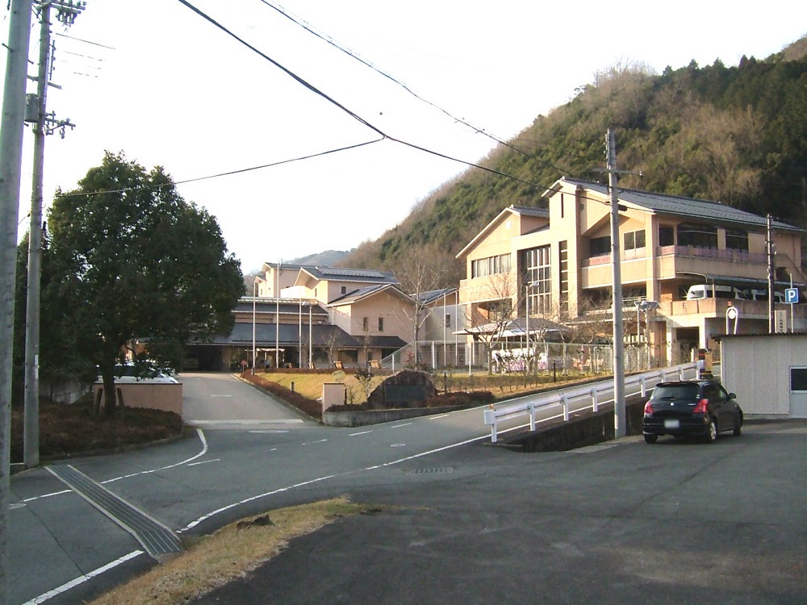
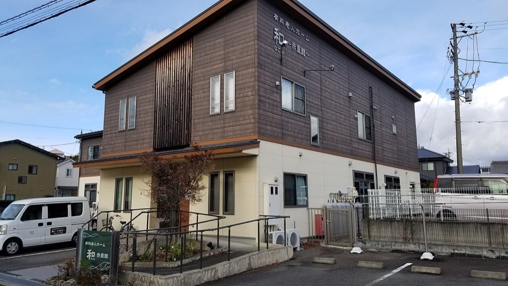

経営が続かない小規模の訪問介護・通所介護・グループホームの事業者を、融資を使って買収する。請求・シフト・記録の事務を1つのシステムに統合し、2026年度改定で設けられた協働化の上乗せ加算を取得する。営業先は、売却先を検索する事業者と、その取引先の地銀・税理士である。
介護費用の総額は2024年度に11兆9,381億円で、前年度から4,242億円増えた1。2025年度は12兆2,208億円で過去最高を更新した2。
特別養護老人ホームは社会福祉法人などに、介護老人保健施設と介護医療院は医療法人などに開設者が限られる。株式会社が買収できるのは居宅と地域密着型の多くのサービスである。2024年度の費用額は次のとおりである3。


| サービス | 費用額 | 請求事業所数 | 1事業所当たり |
|---|---|---|---|
| 訪問介護 | 1兆2,142億円 | 35,497 | 約3,420万円 |
| 通所介護 | 1兆3,388億円 | 24,526 | 約5,460万円 |
| 地域密着型通所介護 | 4,196億円 | 18,130 | 約2,310万円 |
| 認知症対応型共同生活介護 | 7,811億円 | 14,492 | 約5,390万円 |
| 特定施設入居者生活介護 | 6,941億円 | 6,251 | 約1.11億円 |
| 居宅介護支援 | 5,523億円 | 35,943 | 約1,540万円 |
1事業所当たりは費用額を請求事業所数で割った値で、本ページで算出した。介護予防サービスを含まない。
推計 株式会社が買収できる市場 ＝ 次の14サービスの費用額の合計
訪問介護／訪問入浴／訪問看護／福祉用具貸与／通所介護／特定施設／居宅介護支援／定期巡回／地域密着型通所／認知症対応型通所／小規模多機能／看護小規模多機能／グループホーム／地域密着型特定施設
1.214 ＋ 0.056 ＋ 0.406 ＋ 0.393 ＋ 1.339 ＋ 0.694 ＋ 0.552 ＋ 0.099 ＋ 0.420 ＋ 0.075 ＋ 0.286 ＋ 0.082 ＋ 0.781 ＋ 0.023 ≒ 6.42兆円3
このうち社会福祉法人と医療法人が運営する事業所の分も含むため、株式会社が買収できる額はこれより小さい。
韓国と台湾には公的な介護保険または長期介護の制度がある。各国の市場規模は本ページでは一次資料で確認できなかった。
| 年 | 変化 | 数値 |
|---|---|---|
| 2015年度 | 介護報酬改定 | マイナス2.27%3 |
| 2024年度 | 介護報酬改定 | プラス1.59%。うち処遇改善0.98%3 |
| 2024年 | 介護事業者の倒産と休廃業・解散 | 合計784件、前年比24.0%増で過去最多7 |
| 2024年度決算 | 全サービス平均の税引前収支差率 | 4.7%。赤字の事業所は37.5%4 |
| 2025年 | 介護事業者の倒産 | 176件で2年連続の過去最多。訪問介護が91件5 |
| 2025年度 | 老人福祉・介護事業の倒産 | 182件。医療・福祉の小分類で最多6 |
| 2026年度 | 介護報酬改定 | プラス2.03%。うち処遇改善1.95%。生産性向上や協働化に取り組む事業者の介護職員に月0.7万円を上乗せする3 |
介護報酬は国が3年ごとに改定し、単価を事業者が決めることはできない。改定率がプラスでも大半は処遇改善に充てられ、事業者の利益率は上がらない。2026年度改定は協働化に取り組む事業者に上乗せを設けた。小規模の事業者が単独で続けるより、複数の事業所を束ねる方が報酬の上で有利になった。
| 種類 | 事業者 | 規模と動き |
|---|---|---|
| 保険系の介護大手 | SOMPOケア | 2025年3月期の売上高1,557億円で、2022年3月期の1,308億円から拡大した8。介護費用2024年度11.9兆円の約1.3%に当たる |
| 介護大手 | ニチイ、ベネッセスタイルケアなど | 介護事業の売上高は本ページでは確認できなかった |
| 社会福祉法人 | 各地の社会福祉法人 | 特別養護老人ホームを運営する。社会福祉連携推進法人による協働化が政策として推進されている3 |
| 小規模の事業者 | 訪問介護と地域密着型通所の事業者 | 2025年1〜11月の訪問介護の倒産85件のうち、売上不振が83.5%11 |
介護大手の売上でも市場の1%台である。市場は約27万の事業所に分散している3。
首位の条件 1つ目は、介護職員の採用と定着である。報酬の上乗せは職員の処遇改善に使途が限られ、職員が辞めれば事業所の売上が失われる。2つ目は、1つの市町村や都市圏に訪問・通所・グループホームを集め、ケアマネジャーからの紹介を集めることである。3つ目は、請求・記録・シフトの事務を統合し、事務の人件費を事業所から本部に移すことである。
| 用途 | 金額 | 検証すること |
|---|---|---|
| 財務・労務・指定基準の調査、仲介手数料 | 500万円 | 未払残業代と、人員基準と運営基準の違反による報酬返還のおそれ |
| 1社目の取得の自己資金 | 1,500万円 | 訪問介護と通所介護の5事業所・売上2.5億円の会社を約7,500万円で取得できるか |
| 介護記録・請求・シフトのシステム | 600万円 | 事務時間の削減と、生産性向上・協働化の上乗せの取得 |
| 介護職員の採用 | 700万円 | 取得後の離職率を取得前より下げられるか |
| 運転資金 | 700万円 | 介護報酬はサービス提供の翌々月に入金されるため、2か月分の人件費を確保する |
| 合計 | 4,000万円 |
| 月 | 計画 |
|---|---|
| 1〜3月目 | 1つの都市圏に絞り、売上1〜5億円・後継者不在・指定取消の履歴なしの事業者を30社まで一覧にする |
| 4〜6月目 | 3社と面談し1社と基本合意する。過去の実地指導の結果と加算の算定根拠を確認する |
| 7月目 | 取得する。資金は自己資金1,500万円と日本政策金融公庫の承継向け融資6,000万円とする9 |
| 8〜12月目 | 記録と請求を統合する。同じ都市圏で2社目の候補を3社まで絞る |
1年目の判定基準は、職員の離職率が取得前を上回らず、営業利益率が1ポイント以上上がることである。
| 段階 | 資金 | 金融機関 | 条件 |
|---|---|---|---|
| 1社目 1年目 | 事業承継融資 | 日本政策金融公庫 国民生活事業、信用金庫 | 公庫の限度は別枠7,200万円9 |
| 2〜10社目 2〜5年目 | 買収融資、資本性劣後ローン | 地銀、日本政策金融公庫 中小企業事業 | 資本性ローンの限度は15億円、期限一括返済で最長20年10。介護報酬の債権を担保にした融資も検討する |
| ICT 毎年 | 補助金 | 都道府県 | 2025年度補正予算のテクノロジー導入・協働化・経営改善等支援事業3 |
| グループホームの建物 | リース、不動産会社の建設 | 不動産会社、リース会社 | 建物は所有せず賃借し、買収資金と分ける |
| 年目 | 1 | 2 | 3 | 5 | 7 | 10 |
|---|---|---|---|---|---|---|
| 事業所数 | 10 | 40 | 100 | 300 | 650 | 1,400 |
| 売上高 億円 | 4.5 | 18 | 45 | 135 | 290 | 600 |
| 営業利益 億円 | 0.1 | 0.5 | 1.6 | 6 | 15 | 36 |
| 累計投資 億円 | 1.6 | 6 | 15 | 45 | 95 | 200 |
| 借入残高 億円 | 1.4 | 5 | 12 | 35 | 70 | 140 |
| 年目 | 1 | 2 | 3 | 5 | 7 | 10 |
|---|---|---|---|---|---|---|
| 事業所数 | 6 | 15 | 30 | 70 | 130 | 260 |
| 売上高 億円 | 2.7 | 6.8 | 13.5 | 31 | 58 | 115 |
| 営業利益 億円 | 0.03 | 0.1 | 0.3 | 0.9 | 1.9 | 4 |
| 累計投資 億円 | 1.0 | 2.3 | 4.5 | 10 | 19 | 37 |
| 借入残高 億円 | 0.9 | 2 | 3.8 | 8 | 15 | 28 |
前提
楽観の10年目は売上高600億円で、1,000億円の目安に届かない。1,400事業所の取得は年平均140事業所で、10年間で約60社の買収に当たる。保守では260事業所、売上高115億円に留まる。
楽観の売上高600億円は、2024年度の介護費用11.9兆円の約0.5%である。SOMPOケアの1,557億円8を下回り、10年で全国のシェア1位には届かない。
訪問介護に絞っても市場は1兆2,142億円である3。訪問介護の事業者別の売上は確認できず、首位の水準は特定できない。都道府県の単位では、介護費用11.9兆円を47で割ると平均約2,540億円で、多くの県が1,000億円を超えると推定する。1つの県に買収を集中すれば首位に届く可能性はあるが、県別の上位事業者の売上は確認できなかった。
停止する位置は3つある。1つ目は職員の採用で、事業所の人員基準を満たせなければ事業所を閉じるほかない。2つ目は報酬改定で、2015年度のマイナス2.27%3と同じ水準の引下げがあれば、利益率6%の前提は成り立たない。3つ目は買収した事業者の運営基準違反で、過去分の報酬返還を求められる場合である。
| 順 | 国 | 理由 |
|---|---|---|
| 1 | 台湾、韓国 | 公的な介護制度があり、日本と同じ順で高齢化が進む |
| 2 | 中国、タイ | 高齢化が進むが、公的な介護制度の範囲は確認できなかった。事務の統合の手法とシステムを提供する |
介護事業所の運営は各国の報酬制度の下にあり、輸出できるのは運営の手法に限られる。グローバルなインフラになる見込みは低い。
| # | 基準 | 判定 | 根拠 |
|---|---|---|---|
| 1 | 50年、魂を燃やし続けられるか | 創業者が判定 | |
| 2 | 10年以内に、国内市場規模1,000億円以上の市場でシェア1位になれるか | × | 楽観でも全国のシェアは約0.5%で大手の売上1,557億円に届かず、県別の首位の水準も確認できない |
| 3 | 4,000万円で始められ、融資で伸ばせるか | ○ | 1社目は約7,500万円で公庫の承継融資と自己資金で取得できる。ただし入金が2か月後で運転資金を要する |
| 4 | グローバルなインフラになり得るか | × | 介護の運営は各国の報酬制度に依存し、輸出できるのは手法に限られる |
| 5 | 営業力が最初の売上に直接結びつくか | △ | 営業は買収の案件の確保とケアマネジャーからの紹介に結びつくが、単価は国が決める |
| 6 | 同じビジョンを共有する仲間を誘える事業か | 創業者が判定 | |
| 7 | 本業が早く現金を生み、返済と出資の原資になるか | △ | 入金は公的で確実だが、利益率は平均4.7%で、楽観でも10年目の営業利益は36億円に留まる |
| 8 | 投資先を束ねる群の中核になれるか | ○ | 採用・ソフトウェア・福祉用具・訪問看護の各事業がグループの事業所を共通の需要にできる |
| 9 | 成長の資金源がA・B・Cのどれに当たるか | C | 取得した事業者の介護報酬を返済原資にした借入で買収する |
1. 報酬の引下げ 単価は国が決める。2015年度にはマイナス2.27%の改定があった3。対策は複数のサービスを組み合わせ、1つのサービスの引下げの影響を抑えることである。改定そのものは潰せない。
2. 職員の離職 介護事業所の売上は職員の人数で決まる。対策は処遇改善加算の最上位区分を全事業所で取得し、記録の事務を減らすことである。
3. 報酬の返還 取得前の人員基準違反や加算の誤算定が判明すると、過去分の返還を求められる。対策は取得前に加算の算定根拠を1件ずつ確認し、表明保証と売主への分割払いを組み合わせることである。分割払いで補えない額が判明した場合は潰せない。
4. 利益率の上限 全サービス平均の収支差率は4.7%で、37.5%の事業所が赤字である4。借入の金利が1ポイント上がると、楽観の10年目で利払いは年1.4億円増える。利益率を報酬の上限を超えて上げる方法はない。